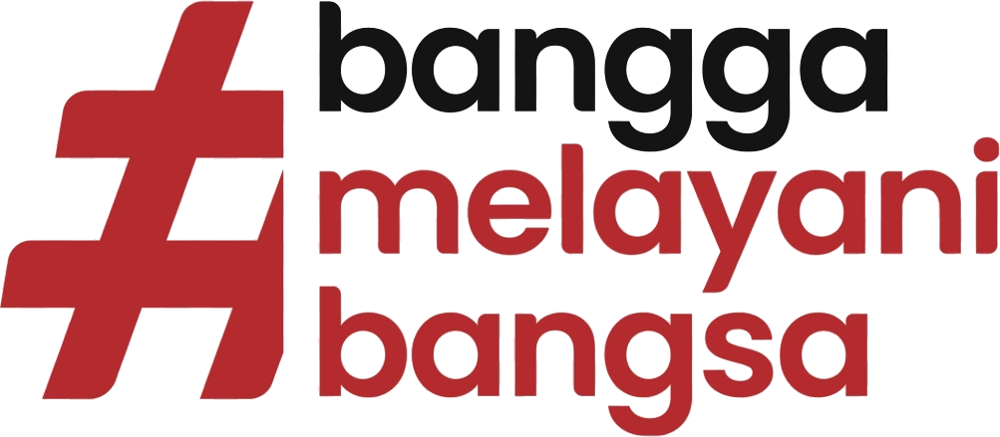

<!doctype html>
<html lang="id">
<head>
<meta charset="utf-8">
<meta name="viewport" content="width=device-width, initial-scale=1">
<title>Dashboard Bapperida Kota Palembang</title>
<link rel="stylesheet" href="https://fonts.googleapis.com/css2?family=Plus+Jakarta+Sans:wght@400;500;600;700;800&display=swap">
<link rel="stylesheet" href="styles.css">
</head>
<body>
<div id="app"></div>
<script type="text/x-template" id="app-template">
<div style="min-height: 100vh; overflow-x: clip; font-size: 13.5px; background: #F4F6F9; font-family: 'Plus Jakarta Sans', system-ui, sans-serif; color: #1B2430; line-height: 1.55">

<header :ref="headRef" :style="`position: ${headPos}; top: 0; left: 0; right: 0; z-index: 30; background: ${headBg}; color: ${headFg}; box-shadow: ${headShadow}; transition: background 0.35s ease, color 0.35s ease, box-shadow 0.35s ease`">
<div style="max-width: 1180px; margin: 0 auto; padding: 0 48px">
<div :style="`display: flex; flex-wrap: wrap; align-items: center; justify-content: space-between; gap: 12px 24px; padding: 8px 0; border-bottom: 1px solid ${headLine}; transition: border-color 0.35s ease`">
<div style="display: flex; align-items: center; gap: 14px">

<span :style="`width: 1px; height: 40px; background: ${headLine}; display: block`" aria-hidden="true"></span>

</div>
<div style="display: flex; align-items: center; gap: 22px; flex-wrap: wrap">


</div>
</div>
<div style="display: flex; flex-wrap: wrap; align-items: center; justify-content: space-between; gap: 8px 24px; padding: 6px 0">
<nav aria-label="Menu utama" style="display: flex; flex-wrap: wrap; gap: 4px">
<template v-for="t in tabs">
<button type="button" @click="t.pick" :aria-current="t.current" :style="`border: 0; border-radius: 8px; padding: 8px 14px; min-height: 40px; font-weight: 700; font-size: 13px; background: ${t.bg}; color: ${t.fg}; text-shadow: ${t.ts}; transition: background 0.35s ease, color 0.35s ease`">{{t.label}}</button>
</template>
</nav>
<div style="display: flex; align-items: center; gap: 8px">
<label for="peran" :style="`font-size: 12px; font-weight: 600; color: ${headFg}`">Masuk sebagai</label>
<select id="peran" :value="role" @change="onRole" :style="`padding: 8px 10px; min-height: 40px; border-radius: 8px; border: 1px solid ${selBorder}; background: #FFFFFF; color: #1B2430; font-size: 13px; font-weight: 600`">
<option value="tim">Ketua Tim Urusan</option>
<option value="kabid">Kepala Bidang</option>
<option value="admin">Admin</option>
<option value="kaban">Kepala Badan</option>
</select>
</div>
</div>
</div>
</header>


<template v-if="isBeranda">
<section :ref="heroRef" aria-label="Sorotan Kota Palembang" style="position: relative; width: 100%; aspect-ratio: 16 / 9; max-height: 900px; min-height: 560px; overflow: hidden; background: #0E2440">

<video class="hero-video" src="assets/ampera-drone.mp4" poster="assets/still-1.jpg" :autoplay="yes" :muted="yes" :loop="yes" :playsinline="yes" :ref="vidRef" aria-hidden="true" style="position: absolute; top: 0; left: 0; width: 100%; height: 100%; object-fit: cover"></video>
<div style="position: absolute; top: 0; right: 0; bottom: 0; left: 0; background: linear-gradient(180deg, rgba(14, 36, 64, 0.7) 0%, rgba(14, 36, 64, 0.2) 24%, rgba(14, 36, 64, 0.5) 55%, rgba(14, 36, 64, 0.94) 100%)" aria-hidden="true"></div>
<div style="position: absolute; top: 0; right: 0; bottom: 0; left: 0; display: flex">
<div style="width: 100%; max-width: 1180px; margin: 0 auto; padding: 48px 48px 140px; display: flex; flex-direction: column; justify-content: flex-end; gap: 12px; color: #FFFFFF">
<h1 style="margin: 0; font-size: clamp(28px, 3vw, 44px); line-height: 1.1; font-weight: 800">Perencanaan Pembangunan Kota Palembang</h1>
<p style="margin: 0; font-size: clamp(15px, 1.3vw, 19px); font-weight: 600; color: #E6EEF7">Selamat datang, {{roleShort}}. Selamat bekerja!</p>
<div style="display: flex; flex-wrap: wrap; align-items: flex-end; justify-content: space-between; gap: 16px; margin-top: 8px">
<div style="display: flex; flex-wrap: wrap; gap: 10px">
<button type="button" @click="heroWarn" style="border: 0; border-radius: 10px; padding: 12px 20px; min-height: 48px; background: #FFFFFF; color: #21518E; font-weight: 700">Lihat peringatan kinerja</button>
<button type="button" @click="goAsk" style="border: 1px solid #FFFFFF; border-radius: 10px; padding: 12px 20px; min-height: 48px; background: transparent; color: #FFFFFF; font-weight: 700">Tanya Asisten AI</button>
</div>
<div style="display: flex; align-items: center; gap: 12px">
<span style="font-size: 12px; color: #E6EEF7; text-align: right; max-width: 170px">Selaras dengan RPJPD 2025–2045 menuju</span>

</div>
</div>
</div>
</div>
<span style="position: absolute; right: 12px; bottom: 116px; font-size: 11px; color: rgba(255, 255, 255, 0.85)">Video: Raja Drone ID (YouTube) · belum berlisensi, contoh saja</span>
</section>
</template>

<template v-if="showBanner">
<div style="position: relative; height: 190px; overflow: hidden; background: #0E2440">

<div style="position: absolute; top: 0; right: 0; bottom: 0; left: 0; background: linear-gradient(90deg, rgba(14, 36, 64, 0.92) 0%, rgba(14, 36, 64, 0.6) 60%, rgba(14, 36, 64, 0.3) 100%)" aria-hidden="true"></div>
<div style="position: relative; max-width: 1180px; margin: 0 auto; height: 100%; padding: 0 48px 26px; display: flex; flex-direction: column; justify-content: flex-end; gap: 4px; color: #FFFFFF">
<template v-if="bannerIsH1">
<h1 style="margin: 0; font-size: 28px; line-height: 1.2; font-weight: 800">{{bannerTitle}}</h1>
</template>
<template v-if="bannerNotH1">
<p style="margin: 0; font-size: 28px; line-height: 1.2; font-weight: 800">{{bannerTitle}}</p>
</template>
<p style="margin: 0; color: #E6EEF7; max-width: 760px">{{bannerSub}}</p>
</div>
</div>
</template>

<main :style="`max-width: 1180px; margin: 0 auto; padding: 36px 48px ${mainPadB}`">

<template v-if="isBeranda">
<section style="display: flex; flex-direction: column; gap: 28px">

<div style="position: relative; margin-top: -104px; background: #FFFFFF; border: 1px solid #DDE3EA; border-radius: 14px; padding: 24px; display: flex; flex-direction: column; gap: 20px; box-shadow: 0 12px 32px rgba(14, 36, 64, 0.14)">
<div style="display: flex; justify-content: space-between; align-items: baseline; flex-wrap: wrap; gap: 8px">
<h2 style="margin: 0; font-size: 19px; font-weight: 800">Peringatan dini kinerja</h2>
<span style="font-size: 12px; color: #4A5462">Proyeksi 2029 dari tren realisasi 2021–2025</span>
</div>
<template v-if="hasTop">
<div style="display: flex; flex-direction: column; border: 1px solid #DDE3EA; border-radius: 10px">
<template v-for="i in topList">
<div :style="`display: flex; flex-wrap: wrap; align-items: center; gap: 8px 16px; padding: 12px 16px; border-top: ${i.borderTop}`">
<span style="flex: 1 1 240px; font-weight: 700">{{i.nama}}</span>
<span :style="`display: inline-flex; align-items: center; gap: 6px; padding: 4px 10px; border-radius: 999px; font-size: 12px; font-weight: 700; background: ${i.pBg}; color: ${i.pFg}`"><span :style="`width: 8px; height: 8px; border-radius: 50%; background: ${i.pDot}; display: inline-block`" aria-hidden="true"></span>{{i.pLabel}}</span>
<span style="font-size: 13px; color: #2B3542; flex: 1 1 300px">{{i.alasan}}</span>
<button type="button" @click="i.open" style="border: 1px solid #21518E; border-radius: 8px; padding: 8px 14px; min-height: 44px; background: #FFFFFF; color: #21518E; font-weight: 700; font-size: 13px">Lihat analisis</button>
</div>
</template>
</div>
</template>
<template v-if="noTop">
<p style="margin: 0; padding: 16px; border-radius: 10px; background: #EAF4E2; color: #2F5A1A; font-weight: 600">Semua indikator dalam cakupan Anda sesuai jalur.</p>
</template>
<div style="display: flex; flex-wrap: wrap; align-items: center; justify-content: space-between; gap: 12px">
<template v-if="canReview">
<button type="button" @click="goReview" style="border: 0; background: transparent; padding: 8px 0; min-height: 44px; color: #6B4513; font-weight: 700; text-align: left; display: inline-flex; align-items: center; gap: 8px"><span style="width: 8px; height: 8px; border-radius: 50%; background: #C88838; display: inline-block; flex-shrink: 0" aria-hidden="true"></span>Pemeriksaan dokumen: {{openFlagsText}}</button>
</template>
<button type="button" @click="heroWarn" style="margin-left: auto; border: 0; border-radius: 10px; padding: 12px 20px; min-height: 44px; background: #21518E; color: #FFFFFF; font-weight: 700">Lihat daftar lengkap</button>
</div>
</div>

<div style="display: flex; flex-direction: column; gap: 18px; margin-top: 8px">
<div style="display: flex; justify-content: space-between; align-items: baseline; flex-wrap: wrap; gap: 8px">
<h2 style="margin: 0; font-size: 20px; font-weight: 800">Ringkasan Pembangunan Kota Palembang</h2>
<span style="font-size: 12px; color: #4A5462">Realisasi 2025 · BPS Kota Palembang</span>
</div>
<div style="display: grid; grid-template-columns: repeat(auto-fit, minmax(220px, 1fr)); gap: 16px">
<template v-for="k in kpis">
<button type="button" class="lift" @click="k.open" style="text-align: left; background: #FFFFFF; border: 1px solid #DDE3EA; border-radius: 16px; padding: 22px 24px; display: flex; flex-direction: column; gap: 6px; color: #1B2430">
<span :style="`width: 44px; height: 5px; border-radius: 3px; background: ${k.pDot}; display: block`" aria-hidden="true"></span>
<span style="font-size: 30px; font-weight: 800; line-height: 1.15; margin-top: 12px">{{k.value}}</span>
<span style="font-size: 14px; font-weight: 600">{{k.nama}}</span>
<span :style="`font-size: 12px; font-weight: 700; color: ${k.pFg}`">{{k.pLabel}} · target 2029 {{k.targetShort}}</span>
</button>
</template>
</div>
<div style="display: flex; justify-content: space-between; align-items: center; gap: 12px; flex-wrap: wrap; margin-top: 6px">
<h3 style="margin: 0; font-size: 16px; font-weight: 800">Grafik</h3>
<span style="font-size: 12px; color: #4A5462">Geser ke samping untuk grafik lain · arahkan kursor ke grafik untuk melihat angka</span>
</div>
<div :ref="carouselRef" class="chart-scroll" role="region" aria-label="Grafik indikator" tabindex="0" style="overflow-x: auto; margin: -18px -48px 0; padding: 18px 48px 22px">
<div style="display: flex; gap: 18px; width: max-content">
<template v-for="ch in charts">
<div class="lift" style="flex: 0 0 480px; width: 480px; background: #FFFFFF; border: 1px solid #DDE3EA; border-radius: 16px; padding: 20px 22px; display: flex; flex-direction: column; gap: 8px">
<div style="display: flex; justify-content: space-between; align-items: flex-start; gap: 10px; flex-wrap: wrap">
<h4 style="margin: 0; font-size: 16px; font-weight: 800">{{ch.title}}</h4>
<div role="group" aria-label="Rentang waktu" style="display: flex; background: #F0F3F7; border-radius: 999px; padding: 3px">
<template v-for="m in ch.modes">
<button type="button" @click="m.pick" :aria-pressed="m.pressed" :style="`border: 0; border-radius: 999px; padding: 6px 12px; min-height: 32px; font-size: 12px; font-weight: 700; background: ${m.bg}; color: ${m.fg}`">{{m.label}}</button>
</template>
</div>
</div>
<div style="display: flex; align-items: baseline; gap: 10px; flex-wrap: wrap; min-height: 36px" aria-live="polite">
<span style="font-size: 22px; font-weight: 800">{{ch.readVal}}</span>
<span style="font-size: 13px; color: #4A5462">{{ch.readSub}}</span>
</div>
<div style="position: relative">
<svg viewBox="0 0 560 210" role="img" :aria-label="ch.aria" style="width: 100%; height: auto; display: block">
<path d="M30 20H530M30 77H530M30 133H530M30 190H530" stroke="#E6EAF0" stroke-width="2" fill="none"></path>
<path :d="ch.guide" stroke="#9AA5B4" stroke-width="1.5" stroke-dasharray="4 4" fill="none"></path>
<path :d="ch.projPath" fill="none" stroke="#7A8594" stroke-width="3" stroke-dasharray="2 7" stroke-linecap="round"></path>
<path :d="ch.targetPath" fill="none" stroke="#C88838" stroke-width="3" stroke-dasharray="8 7" stroke-linecap="round"></path>
<path :d="ch.realPath" fill="none" :stroke="ch.color" stroke-width="4" stroke-linejoin="round" stroke-linecap="round"></path>
<path :d="ch.dots" :fill="ch.color"></path>
<circle :cx="ch.hx" :cy="ch.hy" :r="ch.hr" fill="#FFFFFF" :stroke="ch.hColor" stroke-width="4"></circle>
</svg>
<div @mouseleave="ch.leave" style="position: absolute; top: 0; bottom: 0; left: 5.357%; right: 5.357%; display: flex">
<template v-for="c in ch.cols">
<button type="button" @mouseenter="c.hover" @focus="c.hover" @click="c.hover" :aria-label="c.aria" style="flex: 1 1 0; border: 0; padding: 0; background: transparent; cursor: crosshair"></button>
</template>
</div>
</div>
<div style="display: flex; margin: 0 5.357%" aria-hidden="true">
<template v-for="l in ch.labels">
<span style="flex: 1 1 0; text-align: center; font-size: 11px; color: #4A5462">{{l.t}}</span>
</template>
</div>
<div style="display: flex; flex-wrap: wrap; gap: 6px 16px; font-size: 12px; color: #4A5462; padding-top: 4px">
<span style="display: inline-flex; align-items: center; gap: 6px"><span :style="`width: 16px; height: 3px; background: ${ch.color}; display: inline-block`" aria-hidden="true"></span>{{ch.realLabel}}</span>
<span style="display: inline-flex; align-items: center; gap: 6px"><span style="width: 16px; border-top: 3px dashed #C88838; display: inline-block" aria-hidden="true"></span>{{ch.targetLabel}}</span>
<template v-if="ch.hasProj">
<span style="display: inline-flex; align-items: center; gap: 6px"><span style="width: 16px; border-top: 3px dotted #7A8594; display: inline-block" aria-hidden="true"></span>Proyeksi tren</span>
</template>
</div>
</div>
</template>
</div>
</div>
</div>

<div :ref="docsRef" :style="`background: #E1E8F0; padding: 56px 24px 72px; margin-top: 16px; margin-left: ${bandM}; margin-right: ${bandM}; margin-bottom: ${bandMB}; border-radius: ${bandR}; transition: margin 0.15s linear, border-radius 0.15s linear`">
<div style="max-width: 1084px; margin: 0 auto; display: flex; flex-direction: column; gap: 22px">
<div style="display: flex; flex-direction: column; gap: 6px; align-items: center; text-align: center">
<h2 style="margin: 0; font-size: 26px; font-weight: 800">Lihat dokumen</h2>
<p style="margin: 0; color: #4A5462">Dokumen perencanaan Kota Palembang, perangkat daerah dan regulasi.</p>
</div>
<div style="position: relative; display: flex; width: 100%; max-width: 920px; margin: 0 auto; border: 1px solid #B7C0CC; border-radius: 999px; background: #FFFFFF; overflow: hidden">
<label for="cariBeranda" style="position: absolute; width: 1px; height: 1px; overflow: hidden; clip: rect(0 0 0 0); white-space: nowrap">Cari dokumen</label>
<input id="cariBeranda" type="search" :value="homeQ" @input="onHomeQ" @keydown="onHomeKey" placeholder="Pencarian dokumen…" style="flex: 1 1 auto; min-width: 0; border: 0; padding: 14px 26px; min-height: 54px; background: transparent; color: #1B2430; font-size: 15px">
<button type="button" @click="homeSearch" aria-label="Cari dokumen" style="border: 0; background: #C88838; color: #1B2430; padding: 0 30px; min-height: 54px; display: flex; align-items: center; justify-content: center">
<svg width="22" height="22" viewBox="0 0 24 24" fill="none" stroke="currentColor" stroke-width="2.4" stroke-linecap="round" stroke-linejoin="round" aria-hidden="true"><circle cx="11" cy="11" r="7"></circle><path d="M20 20l-3.5-3.5"></path></svg>
</button>
</div>
<p style="margin: -10px 0 0; text-align: center; font-size: 12px; color: #4A5462">Ketik untuk menyaring jenis dokumen. Tekan Enter untuk mencari judul di perpustakaan dokumen.</p>
<template v-if="noHomeDocs">
<p style="margin: 0; padding: 20px; text-align: center; background: #FFFFFF; border: 1px solid #DDE3EA; border-radius: 12px; color: #4A5462">Tidak ada jenis dokumen yang diawali “{{homeQ}}”.</p>
</template>
<template v-for="g in groups">
<div style="display: flex; flex-direction: column; gap: 18px; margin-top: 12px">
<h3 style="margin: 0; font-size: 12px; font-weight: 700; letter-spacing: 0.1em; text-transform: uppercase; color: #4A5462">{{g.name}}</h3>
<div role="region" :aria-label="g.name" tabindex="0" style="overflow-x: auto; overflow-y: hidden; padding: 24px 8px 20px; margin: -24px -8px 0">
<div style="display: flex; flex-wrap: nowrap; gap: 28px; width: max-content; margin: 0 auto">
<template v-for="d in g.tiles">
<div class="doc-card" style="flex: 0 0 180px; width: 180px; display: flex; flex-direction: column; align-items: center; text-align: center; gap: 6px">
<div class="book" style="position: relative; width: 132px; height: 186px; border-right: 5px solid #FFFFFF; outline: 1px solid #1B2430; overflow: hidden; background: #0E2440">

<div :style="`position: absolute; top: 0; right: 0; bottom: 0; left: 0; background: ${d.tint}`" aria-hidden="true"></div>
<div style="position: relative; height: 100%; padding: 11px 10px; display: flex; flex-direction: column; justify-content: space-between; color: #FFFFFF; text-align: left">
<div style="display: flex; align-items: center; gap: 5px">

<span style="font-size: 7px; font-weight: 700; letter-spacing: 0.08em; text-transform: uppercase; line-height: 1.25">Pemerintah<br>Kota Palembang</span>
</div>
<div style="display: flex; flex-direction: column; gap: 3px">
<span style="font-size: 20px; font-weight: 800; line-height: 1">{{d.code}}</span>
<span style="font-size: 8px; line-height: 1.3">{{d.name}}</span>
<span style="font-size: 9px; font-weight: 800; margin-top: 3px">{{d.yearText}}</span>
</div>
</div>
</div>
<span style="font-weight: 800; font-size: 14px; line-height: 1.3; margin-top: 12px">{{d.fullName}}</span>
<span style="font-size: 12px; color: #4A5462">{{d.countText}}</span>
<button type="button" @click="d.pick" style="margin-top: 2px; border: 0; border-radius: 999px; padding: 8px 22px; min-height: 40px; background: #C88838; color: #1B2430; font-weight: 800; font-size: 11px; letter-spacing: 0.08em; text-transform: uppercase">Selengkapnya</button>
</div>
</template>
</div>
</div>
</div>
</template>
</div>
</div>
</section>
</template>

<template v-if="isKinerjaList">
<section style="display: flex; flex-direction: column; gap: 20px">
<div style="display: flex; flex-wrap: wrap; gap: 12px 24px; align-items: center">
<div role="group" aria-label="Jenis indikator" style="display: flex; flex-wrap: wrap; gap: 6px">
<template v-for="c in jenisChips">
<button type="button" @click="c.pick" :aria-pressed="c.pressed" :style="`border-radius: 999px; padding: 8px 16px; min-height: 40px; font-weight: 700; font-size: 13px; background: ${c.bg}; color: ${c.fg}; border: 1px solid ${c.border}`">{{c.label}}</button>
</template>
</div>
<div role="group" aria-label="Status" style="display: flex; flex-wrap: wrap; gap: 6px">
<template v-for="c in statusChips">
<button type="button" @click="c.pick" :aria-pressed="c.pressed" :style="`border-radius: 999px; padding: 8px 16px; min-height: 40px; font-weight: 700; font-size: 13px; background: ${c.bg}; color: ${c.fg}; border: 1px solid ${c.border}`">{{c.label}}</button>
</template>
</div>
</div>
<div style="background: #FFFFFF; border: 1px solid #DDE3EA; border-radius: 14px; overflow-x: auto">
<div style="min-width: 980px">
<div style="display: grid; grid-template-columns: minmax(240px, 2.4fr) 70px 110px repeat(3, minmax(100px, 1fr)) 160px 110px; gap: 12px; padding: 12px 16px; background: #F4F6F9; font-size: 12px; font-weight: 700; color: #4A5462">
<span>Indikator</span><span>Jenis</span><span>Arah</span><span>Realisasi 2025</span><span>Target 2029</span><span>Proyeksi 2029</span><span>Status</span><span></span>
</div>
<template v-for="r in indRows">
<div style="display: grid; grid-template-columns: minmax(240px, 2.4fr) 70px 110px repeat(3, minmax(100px, 1fr)) 160px 110px; gap: 12px; padding: 14px 16px; border-top: 1px solid #DDE3EA; align-items: center; font-size: 13px">
<span style="display: flex; flex-direction: column"><span style="font-weight: 700">{{r.nama}}</span><span style="font-size: 12px; color: #4A5462">{{r.pd}}</span></span>
<span>{{r.jenis}}</span>
<span>{{r.arahText}}</span>
<span>{{r.realText}}</span>
<span>{{r.targetText}}</span>
<span>{{r.projText}}</span>
<span><span :style="`display: inline-flex; align-items: center; gap: 6px; padding: 4px 10px; border-radius: 999px; font-size: 12px; font-weight: 700; background: ${r.pBg}; color: ${r.pFg}`"><span :style="`width: 8px; height: 8px; border-radius: 50%; background: ${r.pDot}; display: inline-block`" aria-hidden="true"></span>{{r.pLabel}}</span></span>
<button type="button" @click="r.open" style="border: 1px solid #21518E; border-radius: 8px; padding: 8px 12px; min-height: 40px; background: #FFFFFF; color: #21518E; font-weight: 700; font-size: 12px">Detail</button>
</div>
</template>
<template v-if="noRows">
<p style="margin: 0; padding: 24px 16px; color: #4A5462; border-top: 1px solid #DDE3EA">Tidak ada indikator untuk filter ini.</p>
</template>
</div>
</div>
</section>
</template>

<template v-if="isKinerjaDetail">
<section style="display: flex; flex-direction: column; gap: 20px">
<button type="button" @click="backToKinerja" style="align-self: flex-start; border: 0; background: transparent; color: #21518E; font-weight: 700; padding: 8px 0; min-height: 44px">← Kembali ke daftar indikator</button>
<div style="display: flex; flex-wrap: wrap; align-items: center; gap: 12px">
<h1 style="margin: 0; font-size: 25px; font-weight: 800">{{ind.nama}}</h1>
<span :style="`display: inline-flex; align-items: center; gap: 6px; padding: 4px 12px; border-radius: 999px; font-size: 13px; font-weight: 700; background: ${ind.pBg}; color: ${ind.pFg}`"><span :style="`width: 9px; height: 9px; border-radius: 50%; background: ${ind.pDot}; display: inline-block`" aria-hidden="true"></span>{{ind.pLabel}}</span>
</div>
<div style="display: flex; flex-wrap: wrap; gap: 8px">
<template v-for="m in ind.meta">
<span style="background: #FFFFFF; border: 1px solid #DDE3EA; border-radius: 999px; padding: 6px 12px; font-size: 12px"><span style="color: #4A5462">{{m.k}}:</span> <strong>{{m.v}}</strong></span>
</template>
</div>
<div style="display: flex; flex-wrap: wrap; gap: 20px">
<div style="background: #FFFFFF; border: 1px solid #DDE3EA; border-radius: 14px; padding: 24px; flex: 2 1 520px; min-width: 0; display: flex; flex-direction: column; gap: 12px">
<h2 style="margin: 0; font-size: 16px; font-weight: 800">Realisasi dan proyeksi</h2>
<div style="position: relative; height: 230px; border-bottom: 1px solid #B7C0CC">
<div style="position: absolute; top: 0; right: 0; bottom: 0; left: 0; display: flex; align-items: flex-end; gap: 14px; padding: 0 4px">
<template v-for="b in ind.bars">
<div style="flex: 1 1 0; height: 100%; display: flex; flex-direction: column; justify-content: flex-end; align-items: center; gap: 4px">
<span style="font-size: 12px; font-weight: 700">{{b.val}}</span>
<div :style="`width: 100%; max-width: 56px; height: ${b.h}%; background: ${b.bg}; border: ${b.border}; border-radius: 6px 6px 0 0`"></div>
</div>
</template>
</div>
<div :style="`position: absolute; left: 0; right: 0; bottom: ${ind.targetPos}%; border-top: 2px dashed #1B2430; pointer-events: none`" aria-hidden="true"></div>
</div>
<div style="display: flex; gap: 14px; padding: 0 4px" aria-hidden="true">
<template v-for="b in ind.bars">
<span style="flex: 1 1 0; text-align: center; font-size: 12px; color: #4A5462">{{b.label}}</span>
</template>
</div>
<div style="display: flex; flex-wrap: wrap; gap: 8px 20px; font-size: 12px; color: #4A5462; padding-top: 4px">
<span style="display: inline-flex; align-items: center; gap: 6px"><span style="width: 12px; height: 12px; background: #21518E; border-radius: 3px; display: inline-block" aria-hidden="true"></span>Realisasi</span>
<span style="display: inline-flex; align-items: center; gap: 6px"><span style="width: 12px; height: 12px; border: 2px dashed #4A5462; border-radius: 3px; display: inline-block" aria-hidden="true"></span>Proyeksi tren 2029*</span>
<span style="display: inline-flex; align-items: center; gap: 6px"><span style="width: 18px; border-top: 2px dashed #1B2430; display: inline-block" aria-hidden="true"></span>Target 2029: {{ind.targetText}}</span>
</div>
<p style="margin: 0; font-size: 12px; color: #4A5462">*Kelanjutan tren 2021–2025. Indikasi, bukan prediksi.</p>
</div>
<div style="flex: 1 1 260px; display: flex; flex-direction: column; gap: 12px">
<template v-for="st in ind.stats">
<div style="background: #FFFFFF; border: 1px solid #DDE3EA; border-radius: 14px; padding: 16px 18px">
<div style="font-size: 12px; color: #4A5462">{{st.k}}</div>
<div style="font-size: 23px; font-weight: 800">{{st.v}}</div>
</div>
</template>
</div>
</div>
<template v-if="ind.hasProgs">
<div style="background: #FFFFFF; border: 1px solid #DDE3EA; border-radius: 14px; padding: 24px; display: flex; flex-direction: column; gap: 12px">
<h2 style="margin: 0; font-size: 16px; font-weight: 800">Program pendukung di RKPD 2026</h2>
<div style="overflow-x: auto">
<div style="min-width: 720px">
<div style="display: grid; grid-template-columns: minmax(260px, 2.2fr) minmax(160px, 1.2fr) 160px 150px; gap: 12px; padding: 10px 12px; background: #F4F6F9; border-radius: 8px; font-size: 12px; font-weight: 700; color: #4A5462">
<span>Program</span><span>Perangkat daerah</span><span>Pagu indikatif 2026</span><span>Realisasi anggaran 2025</span>
</div>
<template v-for="p in ind.programs">
<div style="display: grid; grid-template-columns: minmax(260px, 2.2fr) minmax(160px, 1.2fr) 160px 150px; gap: 12px; padding: 12px; border-bottom: 1px solid #DDE3EA; font-size: 13px; align-items: start">
<span style="display: flex; flex-direction: column; gap: 2px">
<span style="font-weight: 700">{{p.nama}}</span>
<template v-if="p.hasKendala">
<span style="font-size: 12px; color: #6B4513">Monev: {{p.kendala}}</span>
</template>
</span>
<span>{{p.pd}}</span>
<span>{{p.pagu}}</span>
<span>{{p.real}}</span>
</div>
</template>
</div>
</div>
</div>
</template>
<div style="background: #FFFFFF; border: 1px solid #DDE3EA; border-radius: 14px; padding: 24px; display: flex; flex-direction: column; gap: 16px">
<div style="display: flex; flex-wrap: wrap; align-items: center; justify-content: space-between; gap: 10px">
<div style="display: flex; flex-wrap: wrap; align-items: center; gap: 10px">
<span style="background: #3772BE; color: #FFFFFF; font-weight: 700; font-size: 12px; padding: 4px 10px; border-radius: 999px">Analisis AI</span>
<h2 style="margin: 0; font-size: 16px; font-weight: 800">{{ind.aiTitle}}</h2>
</div>
<span style="font-size: 12px; color: #4A5462">Disusun dari dokumen · keputusan tetap di pimpinan</span>
</div>
<template v-for="sec in ind.sections">
<div style="display: flex; flex-direction: column; gap: 6px">
<span :style="`align-self: flex-start; font-size: 11px; font-weight: 700; letter-spacing: 0.06em; text-transform: uppercase; padding: 3px 8px; border-radius: 4px; background: ${sec.bg}; color: ${sec.fg}`">{{sec.k}}</span>
<ul style="margin: 0; padding-left: 20px; display: flex; flex-direction: column; gap: 4px">
<template v-for="it in sec.items">
<li>{{it.t}}</li>
</template>
</ul>
</div>
</template>
<div style="border-top: 1px solid #DDE3EA; padding-top: 12px; font-size: 12px; color: #4A5462; display: flex; flex-wrap: wrap; gap: 6px 16px; align-items: center">
<strong style="color: #1B2430">Sumber</strong>
<template v-for="sr in ind.src">
<span style="color: #21518E; text-decoration: underline">{{sr.t}}</span>
</template>
</div>
</div>
</section>
</template>

<template v-if="isDocList">
<section style="display: flex; flex-direction: column; gap: 20px">
<div style="display: flex; flex-direction: column; gap: 12px">
<div>
<label for="cari" style="display: block; font-size: 12px; font-weight: 700; margin-bottom: 6px">Cari dokumen</label>
<input id="cari" type="search" :value="docQ" @input="onDocQ" placeholder="Judul, perangkat daerah atau tahun" style="width: 100%; max-width: 520px; padding: 12px 14px; min-height: 44px; border: 1px solid #B7C0CC; border-radius: 10px; background: #FFFFFF; color: #1B2430">
</div>
<div role="group" aria-label="Jenis dokumen" style="display: flex; flex-wrap: wrap; gap: 6px">
<template v-for="c in typeChips">
<button type="button" @click="c.pick" :aria-pressed="c.pressed" :style="`border-radius: 999px; padding: 8px 14px; min-height: 40px; font-weight: 700; font-size: 13px; background: ${c.bg}; color: ${c.fg}; border: 1px solid ${c.border}`">{{c.label}}</button>
</template>
</div>
</div>
<div style="display: flex; flex-direction: column; gap: 10px">
<template v-for="d in docRows">
<button type="button" @click="d.open" style="text-align: left; width: 100%; background: #FFFFFF; border: 1px solid #DDE3EA; border-radius: 12px; padding: 16px 18px; display: flex; flex-wrap: wrap; align-items: center; gap: 12px 16px; color: #1B2430">
<span style="min-width: 88px; font-weight: 700; font-size: 12px; color: #21518E; background: #E6EEF7; border-radius: 6px; padding: 6px 8px; text-align: center">{{d.type}}</span>
<span style="flex: 1 1 320px; display: flex; flex-direction: column; gap: 2px">
<span style="font-weight: 700">{{d.title}}</span>
<span style="font-size: 12px; color: #4A5462">{{d.owner}} · Periode {{d.period}} · Diunggah {{d.upload}}</span>
</span>
<span style="display: flex; flex-wrap: wrap; gap: 6px">
<span style="display: inline-flex; align-items: center; padding: 4px 10px; border-radius: 999px; font-size: 12px; font-weight: 700; background: #ECEFF3; color: #2B3542">{{d.status}}</span>
<template v-if="d.hasChecker">
<span :style="`display: inline-flex; align-items: center; gap: 6px; padding: 4px 10px; border-radius: 999px; font-size: 12px; font-weight: 700; background: ${d.cBg}; color: ${d.cFg}`"><span :style="`width: 8px; height: 8px; border-radius: 50%; background: ${d.cDot}; display: inline-block`" aria-hidden="true"></span>{{d.cLabel}}</span>
</template>
</span>
</button>
</template>
<template v-if="noDocs">
<p style="margin: 0; padding: 24px; background: #FFFFFF; border: 1px solid #DDE3EA; border-radius: 12px; color: #4A5462">Tidak ada dokumen yang cocok.</p>
</template>
</div>
</section>
</template>

<template v-if="isDocDetail">
<section style="display: flex; flex-direction: column; gap: 20px">
<button type="button" @click="backToDocs" style="align-self: flex-start; border: 0; background: transparent; color: #21518E; font-weight: 700; padding: 8px 0; min-height: 44px">← Kembali ke daftar dokumen</button>
<div style="display: flex; flex-direction: column; gap: 8px; align-items: flex-start">
<span style="font-weight: 700; font-size: 12px; color: #21518E; background: #E6EEF7; border-radius: 6px; padding: 6px 10px">{{doc.type}}</span>
<h1 style="margin: 0; font-size: 25px; font-weight: 800">{{doc.title}}</h1>
</div>
<div style="background: #FFFFFF; border: 1px solid #DDE3EA; border-radius: 14px; padding: 20px 24px; display: grid; grid-template-columns: repeat(auto-fill, minmax(200px, 1fr)); gap: 16px">
<template v-for="m in doc.meta">
<div>
<div style="font-size: 12px; color: #4A5462">{{m.k}}</div>
<div style="font-weight: 700">{{m.v}}</div>
</div>
</template>
</div>
<div style="display: flex; flex-wrap: wrap; gap: 20px; align-items: flex-start">
<div style="flex: 3 1 520px; min-width: 0; background: #E9EDF2; border: 1px solid #DDE3EA; border-radius: 14px; height: 520px; display: flex; flex-direction: column; align-items: center; justify-content: center; gap: 10px; color: #4A5462; padding: 24px; text-align: center">
<svg width="44" height="44" viewBox="0 0 24 24" fill="none" stroke="currentColor" stroke-width="1.5" stroke-linecap="round" stroke-linejoin="round" aria-hidden="true"><path d="M14 3H7a2 2 0 0 0-2 2v14a2 2 0 0 0 2 2h10a2 2 0 0 0 2-2V8z"></path><path d="M14 3v5h5"></path><path d="M9 13h6"></path><path d="M9 17h6"></path></svg>
<span style="font-weight: 700; color: #1B2430">Pratinjau PDF</span>
<span style="font-size: 12px">{{doc.title}}</span>
</div>
<div style="flex: 2 1 320px; min-width: 0; display: flex; flex-direction: column; gap: 16px">
<div style="background: #FFFFFF; border: 1px solid #DDE3EA; border-radius: 14px; padding: 20px; display: flex; flex-direction: column; gap: 10px">
<span style="align-self: flex-start; background: #3772BE; color: #FFFFFF; font-weight: 700; font-size: 12px; padding: 4px 10px; border-radius: 999px">Ringkasan AI</span>
<ul style="margin: 0; padding-left: 20px; display: flex; flex-direction: column; gap: 6px">
<template v-for="it in doc.summary">
<li>{{it.t}}</li>
</template>
</ul>
<span style="font-size: 12px; color: #4A5462">Dibuat AI dari isi dokumen. Rujuk halaman asli sebelum mengutip.</span>
</div>
<template v-if="doc.isRujukan">
<div style="background: #FFFFFF; border: 1px solid #DDE3EA; border-radius: 14px; padding: 20px">
<h2 style="margin: 0 0 6px; font-size: 15px; font-weight: 800">Dokumen rujukan</h2>
<p style="margin: 0; color: #4A5462; font-size: 13px">Renstra dan Renja perangkat daerah diperiksa terhadap dokumen ini saat diunggah.</p>
</div>
</template>
<template v-if="doc.isPd">
<div style="background: #FFFFFF; border: 1px solid #DDE3EA; border-radius: 14px; padding: 20px; display: flex; flex-direction: column; gap: 10px">
<h2 style="margin: 0; font-size: 15px; font-weight: 800">Hasil pemeriksaan</h2>
<p style="margin: 0; color: #4A5462; font-size: 13px">{{doc.checkText}}</p>
<template v-for="f in doc.flags">
<div style="display: flex; flex-wrap: wrap; align-items: center; justify-content: space-between; gap: 8px; padding: 10px 12px; border: 1px solid #DDE3EA; border-radius: 10px">
<span style="font-size: 13px; font-weight: 700">{{f.title}}</span>
<span :style="`display: inline-flex; align-items: center; gap: 6px; padding: 4px 10px; border-radius: 999px; font-size: 12px; font-weight: 700; background: ${f.sBg}; color: ${f.sFg}`"><span :style="`width: 8px; height: 8px; border-radius: 50%; background: ${f.sDot}; display: inline-block`" aria-hidden="true"></span>{{f.sLabel}}</span>
</div>
</template>
<template v-if="doc.showReviewBtn">
<button type="button" @click="goReview" style="align-self: flex-start; border: 1px solid #21518E; border-radius: 10px; padding: 10px 16px; min-height: 44px; background: #FFFFFF; color: #21518E; font-weight: 700">Buka di Pemeriksaan</button>
</template>
</div>
</template>
<div style="display: flex; flex-wrap: wrap; gap: 10px">
<button type="button" style="border: 0; border-radius: 10px; padding: 12px 18px; min-height: 44px; background: #21518E; color: #FFFFFF; font-weight: 700">Unduh PDF</button>
<button type="button" @click="askDoc" style="border: 1px solid #3772BE; border-radius: 10px; padding: 12px 18px; min-height: 44px; background: #E3ECF8; color: #1F4A85; font-weight: 700">Tanyakan ke Asisten AI</button>
</div>
</div>
</div>
</section>
</template>

<template v-if="isBukuList">
<section style="display: flex; flex-direction: column; gap: 24px">
<div style="display: flex; flex-direction: column; gap: 10px">
<h2 style="margin: 0; font-size: 12px; font-weight: 700; letter-spacing: 0.1em; text-transform: uppercase; color: #4A5462">1 · Bidang pengampu</h2>
<div style="display: grid; grid-template-columns: repeat(auto-fit, minmax(260px, 1fr)); gap: 14px">
<template v-for="b in bidangCards">
<button type="button" @click="b.pick" :aria-pressed="b.pressed" :style="`text-align: left; padding: 0; overflow: hidden; border-radius: 14px; border: 2px solid ${b.border}; background: ${b.bg}; color: #1B2430; display: flex; flex-direction: column`">

<span style="padding: 14px 16px 16px; display: flex; flex-direction: column; gap: 4px">
<span style="font-weight: 800; font-size: 15px">{{b.name}}</span>
<span style="font-size: 12px; color: #4A5462">{{b.countText}}</span>
</span>
</button>
</template>
</div>
</div>
<div style="display: flex; flex-direction: column; gap: 10px">
<h2 style="margin: 0; font-size: 12px; font-weight: 700; letter-spacing: 0.1em; text-transform: uppercase; color: #4A5462">2 · Urusan pemerintahan</h2>
<div style="display: grid; grid-template-columns: repeat(auto-fill, minmax(240px, 1fr)); gap: 12px">
<template v-for="u in urusanCards">
<button type="button" @click="u.open" style="text-align: left; padding: 18px; border-radius: 12px; border: 1px solid #DDE3EA; background: #FFFFFF; color: #1B2430; min-height: 108px; display: flex; flex-direction: column; gap: 6px">
<span style="font-weight: 800; font-size: 15px">{{u.name}}</span>
<span style="font-size: 12px; color: #4A5462">{{u.countText}}</span>
<span :style="`font-size: 12px; font-weight: 700; color: ${u.sumFg}; margin-top: auto`">{{u.sumText}}</span>
</button>
</template>
</div>
</div>
</section>
</template>

<template v-if="isBukuDetail">
<section style="display: flex; flex-direction: column; gap: 20px">
<button type="button" @click="backToBuku" style="align-self: flex-start; border: 0; background: transparent; color: #21518E; font-weight: 700; padding: 8px 0; min-height: 44px">← Buku Saku · {{urusan.bidangName}}</button>
<div style="display: flex; flex-wrap: wrap; align-items: center; justify-content: space-between; gap: 12px">
<h1 style="margin: 0; font-size: 25px; font-weight: 800">Urusan {{urusan.name}}</h1>
<button type="button" @click="toggleDraft" style="border: 1px solid #3772BE; border-radius: 10px; padding: 12px 18px; min-height: 44px; background: #E3ECF8; color: #1F4A85; font-weight: 700">{{draftBtn}}</button>
</div>
<template v-if="draftOpen">
<div style="background: #FFFFFF; border: 2px solid #3772BE; border-radius: 14px; padding: 24px; display: flex; flex-direction: column; gap: 12px">
<span style="align-self: flex-start; background: #3772BE; color: #FFFFFF; font-weight: 700; font-size: 12px; padding: 4px 10px; border-radius: 999px">Draf AI · perlu ditinjau sebelum diterbitkan</span>
<template v-for="p in urusan.draft">
<p style="margin: 0">{{p.t}}</p>
</template>
<div style="display: flex; flex-wrap: wrap; gap: 10px">
<button type="button" style="border: 0; border-radius: 10px; padding: 10px 16px; min-height: 44px; background: #21518E; color: #FFFFFF; font-weight: 700">Salin ke buku saku</button>
<button type="button" @click="toggleDraft" style="border: 1px solid #B7C0CC; border-radius: 10px; padding: 10px 16px; min-height: 44px; background: #FFFFFF; color: #1B2430; font-weight: 700">Tutup draf</button>
</div>
</div>
</template>
<div style="display: grid; grid-template-columns: repeat(auto-fit, minmax(320px, 1fr)); gap: 16px">
<div style="background: #FFFFFF; border: 1px solid #DDE3EA; border-radius: 14px; padding: 20px; display: flex; flex-direction: column; gap: 8px">
<h2 style="margin: 0; font-size: 16px; font-weight: 800">Profil urusan</h2>
<p style="margin: 0; color: #2B3542">{{urusan.profil}}</p>
</div>
<div style="background: #FFFFFF; border: 1px solid #DDE3EA; border-radius: 14px; padding: 20px; display: flex; flex-direction: column; gap: 10px">
<h2 style="margin: 0; font-size: 16px; font-weight: 800">Indikator kinerja</h2>
<template v-for="i in urusan.inds">
<div style="display: flex; flex-wrap: wrap; align-items: center; gap: 8px 12px; padding: 10px 12px; border: 1px solid #DDE3EA; border-radius: 10px">
<span style="flex: 1 1 180px; display: flex; flex-direction: column"><span style="font-weight: 700; font-size: 13px">{{i.nama}}</span><span style="font-size: 12px; color: #4A5462">Realisasi 2025: {{i.realText}}</span></span>
<span :style="`display: inline-flex; align-items: center; gap: 6px; padding: 4px 10px; border-radius: 999px; font-size: 12px; font-weight: 700; background: ${i.pBg}; color: ${i.pFg}`"><span :style="`width: 8px; height: 8px; border-radius: 50%; background: ${i.pDot}; display: inline-block`" aria-hidden="true"></span>{{i.pLabel}}</span>
<button type="button" @click="i.open" style="border: 1px solid #21518E; border-radius: 8px; padding: 6px 12px; min-height: 40px; background: #FFFFFF; color: #21518E; font-weight: 700; font-size: 12px">Lihat</button>
</div>
</template>
<template v-if="urusan.noInds">
<p style="margin: 0; color: #4A5462; font-size: 13px">Belum ada indikator kinerja yang tertaut ke urusan ini.</p>
</template>
</div>
<div style="background: #FFFFFF; border: 1px solid #DDE3EA; border-radius: 14px; padding: 20px; display: flex; flex-direction: column; gap: 8px">
<h2 style="margin: 0; font-size: 16px; font-weight: 800">Isu strategis</h2>
<ul style="margin: 0; padding-left: 20px; display: flex; flex-direction: column; gap: 4px">
<template v-for="it in urusan.isu">
<li>{{it.t}}</li>
</template>
</ul>
</div>
<div style="background: #FFFFFF; border: 1px solid #DDE3EA; border-radius: 14px; padding: 20px; display: flex; flex-direction: column; gap: 10px">
<h2 style="margin: 0; font-size: 16px; font-weight: 800">Publikasi</h2>
<div style="display: flex; flex-wrap: wrap; align-items: center; justify-content: space-between; gap: 8px; padding: 10px 12px; border: 1px solid #DDE3EA; border-radius: 10px">
<span style="font-size: 13px"><strong>Buku Saku Urusan {{urusan.name}} 2025</strong> · PDF</span>
<button type="button" style="border: 0; border-radius: 8px; padding: 8px 14px; min-height: 40px; background: #21518E; color: #FFFFFF; font-weight: 700; font-size: 12px">Unduh</button>
</div>
</div>
</div>
</section>
</template>

<template v-if="isAsisten">
<section style="display: flex; flex-direction: column; gap: 20px; max-width: 920px">
<div style="display: flex; flex-wrap: wrap; gap: 8px 18px; font-size: 12px; color: #4A5462">
<span style="display: inline-flex; align-items: center; gap: 6px"><span style="font-weight: 700; padding: 2px 8px; border-radius: 4px; background: #E6EEF7; color: #21518E">FAKTA</span>langsung dari dokumen</span>
<span style="display: inline-flex; align-items: center; gap: 6px"><span style="font-weight: 700; padding: 2px 8px; border-radius: 4px; background: #ECEFF3; color: #2B3542">ANALISIS</span>hasil perhitungan</span>
<span style="display: inline-flex; align-items: center; gap: 6px"><span style="font-weight: 700; padding: 2px 8px; border-radius: 4px; background: #F8EEDD; color: #6B4513">SARAN</span>usulan AI untuk ditinjau</span>
</div>
<div style="display: flex; flex-direction: column; gap: 8px">
<h2 style="margin: 0; font-size: 13px; font-weight: 700">Contoh pertanyaan</h2>
<div style="display: flex; flex-wrap: wrap; gap: 8px">
<template v-for="c in exChips">
<button type="button" @click="c.pick" :aria-pressed="c.pressed" :style="`text-align: left; border-radius: 12px; padding: 10px 14px; min-height: 44px; font-size: 13px; font-weight: 600; background: ${c.bg}; color: ${c.fg}; border: 1px solid ${c.border}`">{{c.label}}</button>
</template>
</div>
</div>
<div style="background: #FFFFFF; border: 1px solid #DDE3EA; border-radius: 14px; padding: 24px; display: flex; flex-direction: column; gap: 16px">
<div style="align-self: flex-end; max-width: 80%; background: #21518E; color: #FFFFFF; padding: 12px 16px; border-radius: 16px 16px 4px 16px; font-weight: 600">{{chatQ}}</div>
<div style="align-self: flex-start; max-width: 94%; border: 1px solid #DDE3EA; border-radius: 16px 16px 16px 4px; padding: 16px 18px; display: flex; flex-direction: column; gap: 14px; background: #FAFBFC">
<span style="align-self: flex-start; background: #3772BE; color: #FFFFFF; font-weight: 700; font-size: 12px; padding: 3px 10px; border-radius: 999px">Asisten AI</span>
<template v-for="sec in chatSections">
<div style="display: flex; flex-direction: column; gap: 6px">
<span :style="`align-self: flex-start; font-size: 11px; font-weight: 700; letter-spacing: 0.06em; text-transform: uppercase; padding: 3px 8px; border-radius: 4px; background: ${sec.bg}; color: ${sec.fg}`">{{sec.k}}</span>
<ul style="margin: 0; padding-left: 20px; display: flex; flex-direction: column; gap: 4px">
<template v-for="it in sec.items">
<li>{{it.t}}</li>
</template>
</ul>
</div>
</template>
<template v-if="chatHasSrc">
<div style="border-top: 1px solid #DDE3EA; padding-top: 10px; font-size: 12px; color: #4A5462; display: flex; flex-wrap: wrap; gap: 6px 16px; align-items: center">
<strong style="color: #1B2430">Sumber</strong>
<template v-for="sr in chatSrc">
<span style="color: #21518E; text-decoration: underline">{{sr.t}}</span>
</template>
</div>
</template>
</div>
</div>
<div style="display: flex; gap: 10px; flex-wrap: wrap">
<label for="tanya" style="position: absolute; width: 1px; height: 1px; overflow: hidden; clip: rect(0 0 0 0); white-space: nowrap">Pertanyaan</label>
<input id="tanya" type="text" :value="draft" @input="onDraft" @keydown="onDraftKey" placeholder="Tanyakan tentang dokumen, indikator, atau minta draf ringkasan" style="flex: 1 1 320px; padding: 12px 14px; min-height: 48px; border: 1px solid #B7C0CC; border-radius: 10px; background: #FFFFFF; color: #1B2430">
<button type="button" @click="send" style="border: 0; border-radius: 10px; padding: 12px 22px; min-height: 48px; background: #21518E; color: #FFFFFF; font-weight: 700">Kirim</button>
</div>
</section>
</template>

<template v-if="isReviewList">
<section style="display: flex; flex-direction: column; gap: 20px">
<div style="display: flex; flex-wrap: wrap; gap: 10px">
<span style="background: #F8EEDD; color: #6B4513; border-radius: 999px; padding: 6px 14px; font-weight: 700; font-size: 13px">Menunggu tinjauan: {{reviewOpen}}</span>
<span style="background: #ECEFF3; color: #2B3542; border-radius: 999px; padding: 6px 14px; font-weight: 700; font-size: 13px">Selesai: {{reviewDone}}</span>
</div>
<div style="display: flex; flex-direction: column; gap: 10px">
<template v-for="f in flagRows">
<div style="background: #FFFFFF; border: 1px solid #DDE3EA; border-radius: 12px; padding: 16px 18px; display: flex; flex-wrap: wrap; align-items: center; gap: 12px 16px">
<div style="flex: 1 1 360px; display: flex; flex-direction: column; gap: 2px">
<span style="font-size: 12px; color: #4A5462">{{f.chkDoc}}</span>
<span style="font-weight: 700">{{f.title}}</span>
<span style="font-size: 12px; color: #4A5462">Indikator: {{f.ind}}</span>
</div>
<span style="font-size: 12px; font-weight: 700; color: #21518E; background: #E6EEF7; border-radius: 6px; padding: 4px 10px">{{f.jenis}}</span>
<span :style="`display: inline-flex; align-items: center; gap: 6px; padding: 4px 10px; border-radius: 999px; font-size: 12px; font-weight: 700; background: ${f.sBg}; color: ${f.sFg}`"><span :style="`width: 8px; height: 8px; border-radius: 50%; background: ${f.sDot}; display: inline-block`" aria-hidden="true"></span>{{f.sLabel}}</span>
<button type="button" @click="f.open" style="border: 1px solid #21518E; border-radius: 8px; padding: 8px 16px; min-height: 44px; background: #FFFFFF; color: #21518E; font-weight: 700">Tinjau</button>
</div>
</template>
<template v-if="noFlags">
<p style="margin: 0; padding: 24px; background: #FFFFFF; border: 1px solid #DDE3EA; border-radius: 12px; color: #4A5462">Tidak ada temuan dalam cakupan Anda.</p>
</template>
</div>
</section>
</template>

<template v-if="isReviewDetail">
<section style="display: flex; flex-direction: column; gap: 20px">
<button type="button" @click="backToReview" style="align-self: flex-start; border: 0; background: transparent; color: #21518E; font-weight: 700; padding: 8px 0; min-height: 44px">← Kembali ke antrean</button>
<div style="display: flex; flex-direction: column; gap: 6px; align-items: flex-start">
<span style="font-size: 12px; font-weight: 700; color: #21518E; background: #E6EEF7; border-radius: 6px; padding: 4px 10px">{{flag.jenis}}</span>
<h1 style="margin: 0; font-size: 25px; font-weight: 800">{{flag.title}}</h1>
<p style="margin: 0; color: #4A5462">Indikator: {{flag.ind}} · Status: {{flag.sLabel}}</p>
</div>
<div style="display: grid; grid-template-columns: repeat(auto-fit, minmax(300px, 1fr)); gap: 16px">
<div style="background: #FFFFFF; border: 1px solid #DDE3EA; border-radius: 14px; padding: 20px; display: flex; flex-direction: column; gap: 6px">
<span style="font-size: 12px; font-weight: 700; letter-spacing: 0.06em; text-transform: uppercase; color: #4A5462">Dokumen rujukan</span>
<span style="font-weight: 700">{{flag.refDoc}}</span>
<span style="font-size: 12px; color: #4A5462">{{flag.refPage}}</span>
<span style="font-size: 12px; color: #4A5462; margin-top: 10px">{{flag.label}}</span>
<span style="font-size: 24px; font-weight: 800">{{flag.refVal}}</span>
</div>
<div style="background: #FFFFFF; border: 2px solid #C88838; border-radius: 14px; padding: 20px; display: flex; flex-direction: column; gap: 6px">
<span style="font-size: 12px; font-weight: 700; letter-spacing: 0.06em; text-transform: uppercase; color: #6B4513">Dokumen diperiksa</span>
<span style="font-weight: 700">{{flag.chkDoc}}</span>
<span style="font-size: 12px; color: #4A5462">{{flag.chkPage}}</span>
<span style="font-size: 12px; color: #4A5462; margin-top: 10px">{{flag.label}}</span>
<span style="font-size: 24px; font-weight: 800">{{flag.chkVal}}</span>
</div>
</div>
<div style="background: #FFFFFF; border: 1px solid #DDE3EA; border-radius: 14px; padding: 20px; display: flex; flex-direction: column; gap: 8px">
<span style="align-self: flex-start; background: #3772BE; color: #FFFFFF; font-weight: 700; font-size: 12px; padding: 4px 10px; border-radius: 999px">Catatan AI</span>
<p style="margin: 0">{{flag.ai}}</p>
</div>
<div style="background: #FFFFFF; border: 1px solid #DDE3EA; border-radius: 14px; padding: 20px; display: flex; flex-direction: column; gap: 12px">
<label for="catatan" style="font-weight: 700">Catatan peninjau</label>
<textarea id="catatan" rows="3" :value="note" @input="onNote" placeholder="Tulis alasan atau permintaan perbaikan" style="width: 100%; padding: 12px 14px; border: 1px solid #B7C0CC; border-radius: 10px; background: #FFFFFF; color: #1B2430; resize: vertical"></textarea>
<div style="display: flex; flex-wrap: wrap; gap: 10px">
<button type="button" @click="markOk" style="border: 0; border-radius: 10px; padding: 12px 18px; min-height: 44px; background: #21518E; color: #FFFFFF; font-weight: 700">Tandai sesuai</button>
<button type="button" @click="markFix" style="border: 1px solid #21518E; border-radius: 10px; padding: 12px 18px; min-height: 44px; background: #FFFFFF; color: #21518E; font-weight: 700">Minta perbaikan ke PD</button>
<button type="button" @click="markIgnore" style="border: 1px solid #B7C0CC; border-radius: 10px; padding: 12px 18px; min-height: 44px; background: #FFFFFF; color: #2B3542; font-weight: 700">Abaikan</button>
</div>
</div>
</section>
</template>

</main>

<footer style="background: linear-gradient(135deg, #21518E 0%, #1A4275 100%); color: #FFFFFF">
<div style="max-width: 1180px; margin: 0 auto; padding: 56px 48px 36px; display: flex; flex-direction: column; gap: 56px">
<div style="display: flex; flex-direction: column; gap: 22px">
<div style="display: flex; align-items: center; gap: 18px">

<div style="display: flex; flex-direction: column; gap: 2px">
<span style="font-size: 20px; font-weight: 800; line-height: 1.3">Badan Perencanaan Pembangunan, Riset dan Inovasi Daerah</span>
<span style="font-size: 17px; color: #CFE0F5">Kota Palembang</span>
</div>
</div>
<div style="display: flex; flex-direction: column; gap: 10px; font-size: 17px">
<span>Jl. Merdeka No.74, 22 Ilir, Palembang - Sumatera Selatan 30131</span>
<span style="display: inline-flex; align-items: center; gap: 12px">
<svg width="22" height="22" viewBox="0 0 24 24" fill="none" stroke="currentColor" stroke-width="1.8" stroke-linecap="round" stroke-linejoin="round" aria-hidden="true"><path d="M22 16.9v3a2 2 0 0 1-2.2 2 19.8 19.8 0 0 1-8.6-3.1 19.5 19.5 0 0 1-6-6A19.8 19.8 0 0 1 2.1 4.2 2 2 0 0 1 4.1 2h3a2 2 0 0 1 2 1.7c.1.9.4 1.8.7 2.7a2 2 0 0 1-.5 2.1L8 9.8a16 16 0 0 0 6 6l1.3-1.3a2 2 0 0 1 2.1-.5c.9.3 1.8.6 2.7.7a2 2 0 0 1 1.7 2z"></path></svg>
<span>0711-353522</span>
</span>
</div>
</div>
<div style="display: grid; grid-template-columns: repeat(auto-fit, minmax(220px, 1fr)); gap: 36px 40px">
<nav aria-label="Kelitbangan" style="display: flex; flex-direction: column; gap: 12px">
<h2 style="margin: 0 0 8px; font-size: 21px; font-weight: 800">Kelitbangan</h2>
<a class="foot-link" href="#" style="color: #FFFFFF; text-decoration: none; font-size: 17px">Inovasi</a>
<a class="foot-link" href="#" style="color: #FFFFFF; text-decoration: none; font-size: 17px">Kajian</a>
<a class="foot-link" href="#" style="color: #FFFFFF; text-decoration: none; font-size: 17px">Regulasi</a>
</nav>
<nav aria-label="Palembang - Sumsel" style="display: flex; flex-direction: column; gap: 12px">
<h2 style="margin: 0 0 8px; font-size: 21px; font-weight: 800">Palembang - Sumsel</h2>
<a class="foot-link" href="#" style="color: #FFFFFF; text-decoration: none; font-size: 17px">Bappeda Litbang</a>
<a class="foot-link" href="#" style="color: #FFFFFF; text-decoration: none; font-size: 17px">Geoportal</a>
<a class="foot-link" href="#" style="color: #FFFFFF; text-decoration: none; font-size: 17px">Pemerintah Kota Palembang</a>
<a class="foot-link" href="#" style="color: #FFFFFF; text-decoration: none; font-size: 17px">Balitbangda Prov. Sumsel</a>
</nav>
<nav aria-label="Nasional" style="display: flex; flex-direction: column; gap: 12px">
<h2 style="margin: 0 0 8px; font-size: 21px; font-weight: 800">Nasional</h2>
<a class="foot-link" href="#" style="color: #FFFFFF; text-decoration: none; font-size: 17px">IGA Kemendagri</a>
<a class="foot-link" href="#" style="color: #FFFFFF; text-decoration: none; font-size: 17px">Badan Riset dan Inovasi Nasional</a>
<a class="foot-link" href="#" style="color: #FFFFFF; text-decoration: none; font-size: 17px">Republik Indonesia</a>
</nav>
</div>
<div style="border-top: 1px solid rgba(255, 255, 255, 0.25); padding-top: 20px; font-size: 13px; color: #CFE0F5">© 2026 Bapperida Kota Palembang</div>
</div>
</footer>

<template v-if="showFab">
<button type="button" @click="goAsk" style="position: fixed; right: 24px; bottom: 24px; z-index: 10; border: 0; border-radius: 999px; padding: 14px 20px; min-height: 48px; background: #3772BE; color: #FFFFFF; font-weight: 700; box-shadow: 0 8px 22px rgba(14, 36, 64, 0.25); display: flex; align-items: center; gap: 8px">
<svg width="18" height="18" viewBox="0 0 24 24" fill="none" stroke="currentColor" stroke-width="2" stroke-linecap="round" stroke-linejoin="round" aria-hidden="true"><path d="M21 15a2 2 0 0 1-2 2H7l-4 4V5a2 2 0 0 1 2-2h14a2 2 0 0 1 2 2z"></path></svg>
Tanya Asisten AI
</button>
</template>

</div>
</script>
<script src="js/vue.global.prod.js"></script>
<script src="data/data.js"></script>
<script src="js/openrouter.js"></script>
<script src="js/app.js"></script>
</body>
</html>
